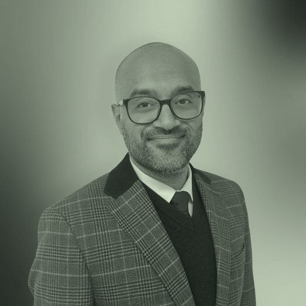

I lead communications for a living. Reputation, media, and the high-stakes calls that shape how a business is seen.
I started as a journalist and then worked in advertising, before crossing over to the other side of the notebook as a public relations specialist. Two decades on, I've built and run communications teams across payments, fintech, market research, and the legal sector. I've taken a fintech unicorn through its growth years, rebranded a company during an M&A, driven comms at stock market listed companies, and spent over half a decade in and around the legal profession, working with regulators, sector bodies and law firms of all sizes.
The through-line now is AI. I hire and lead communicators, then supercharge how the function works with it, so a small team researches deeper and produces more than its headcount should allow. Journalist's instincts, a strong team, and a real operating edge behind both.
Building the global corporate communications and PR function from scratch, with best-practice frameworks, reputation protocols, and AI-driven agentic workflows across every market. Advising the Group CEO and c-suite on executive communications, media, thought leadership, and corporate affairs, including M&A, announcements, and crisis preparedness. Leading agencies and in-house team, events, digital, and a ground-up focus on AEO and GEO.
Team buildingAI-led commsLegal techLed global communications and events across 16 offices and more than 120 markets, growing top-tier coverage 40% year on year and partnering with Mastercard, Visa, Google, and HSBC on brand and thought-leadership campaigns. Directed in-house and agency teams handling 10,000+ media mentions a month, advised the c-suite on reputation and positioning, and brought AI into the content and media operation as it scaled.
Global commsAI contentThought leadershipLed global public relations from Series D through a $292m Series E and a pre-IPO Nasdaq cycle, growing coverage 25% year on year and share of voice by five points. Delivered a full corporate rebrand to new parent Zepz and the communications for the $500m Sendwave acquisition, across B2B and B2C in remittances, digital banking, crypto, and BNPL, with a 1m-plus social following.
Fintech PRRebrandPre-IPOLed corporate communications, PR, and brand for the UK's largest law school, part of a PE-backed group, delivering 10x coverage growth over five years and +20 points of domain authority. Advised the board on growth strategy, M&A, and reputation, and ran the sector-facing programme with the Law Society, the SRA, and Magic and Silver Circle firms.
Corporate commsBoard advisoryLegal sectorLed an award-winning PR team and a 500,000-strong social following for a global professional-education group, supporting new international school launches.
Led press and media relations for a UK and Ireland student membership body, building its visibility across the national press.
Managed public relations and corporate communications for a NYSE Euronext-listed global payments group, issuing regulatory news and supporting eight multi-million-euro product-line launches.
Correspondent and sub-editor on the tabloid Yuva, with editorial work for the travel aggregator ClearTrip and copywriting for a healthcare communications agency.